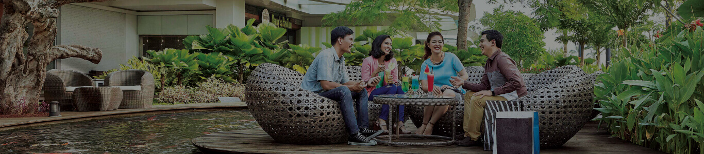

Sarapan Pagi Memiliki Segudang Manfaat, diantaranya :
- Memberikan Energi Lebih
- Tubuh memerlukan energi yang cukup untuk menjalankan aktivitas di pagi hari dan energi tersebut dapat diperoleh dari sarapan pagi. Hal ini membuat tubuh tetap fit dan tidak cepat lelah.
- Menyegarkan Otak
- Manfaat sarapan juga baik untuk otak Anda. Otak juga mendapatkan nutrisi dari sarapan sehingga otak Anda dapat berpikir lebih baik dan cepat.
- Menjaga Konsentrasi
- Sarapan juga diketahui dapat memperbaiki kemampuan berpikir Anda dan menjaga Anda agar tetap fokus dalam melakukan pekerjaan atau aktivitas.
- Mencegah Penyakit Maag
- Sarapan pagi membuat lambung terisi makanan sehingga dapat menetralisir asam lambung. Lambung yang terlalu lama kosong dapat mengakibatkan rasa perih di lambung dan berakibat sakit maag.
- Menyehatkan Tubuh
- Sarapan pagi membuat tubuh terhindar dari kolestrol. Hal ini dikarenakan sarapan mampu mendorong metabolisme sehingga produksi enzim yang meningkatkan kolestrol berkurang.
- Menghindari Makan Tak Terkontrol
- Sarapan pagi menghindarkan Anda dari rasa lapar berlebih. Jika tidak sarapan, yang terjadi adalah rasa lapar mengakibatkan porsi makan siang menjadi lebih banyak dan mengonsumsi banyak camilan. Dari camilan-camilan inilah dapat menyebabkan kegemukan.
- Menambah Nutrisi dan Meningkatkan Energi Tubuh
- Sarapan menyediakan proporsi asupan total nutrisi sepanjang hari secara signifikan dan menawarkan kesempatan untuk mengkonsumsi makanan yang penuh dengan nutrisi seperti zat besi, serat dan vitamin
- Penurunan Berat Badan Tubuh
- Mengkonsumsi makanan sehat pada saat bangun tidur dapat memberi peningkatan metabolisme tubuh, jika Anda sedang dalam program diet, hal yang diinginkan adalah meningkatkan metabolisme tubuh untuk membakar lemak
- Koordinasi Tubuh Lebih Baik.
- Manfaat sarapan pagi bagi tubuh yakni mengkoordinasi tubuh untuk menjadi lebih baik. Anda yang memiliki masalah pada keseimbangan tubuh bisa memperbaikinya dengan mengkonsumsi sarapan pagi secara teratur
- Mengurangi Resiko Stres
- Dalam keadaan perut kosong di pagi hari dengan aktifitas padat serta tekanan pekerjaan yang tinggi dan ditambah dengan kondisi cuaca yang tidak baik akan membuat Anda mudah stres. Maka, manfaat sarapan pagi itu adalah mengurangi resiko stres tersebut.